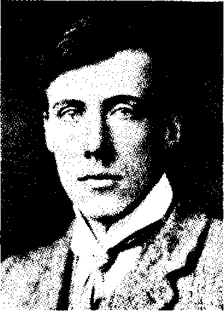

Bölüm 11
Jacob’s Room
Virginia Woolf, üçüncü romanı Jacob’s Room’u 1921’de bitirip, bir yıl sonra yayınladı. Yunanistan’da tifoya kapılıp 1906’da çok genç yaşta ölüveren sevgili kardeşi Thoby’nin kişiliğini düşünerek yazdığı bu kitaba, neden “Jacob’un Odası” adını verdiğini bilemeyiz. Çünkü Jacob’un bir tek odası değil; çocukluk odası, Cambridge’deki odası, Londra’daki odası gibi birçok odası vardır. Belki Virginia Woolf, Jacob Flanders, Thoby gibi gencecik, yirmi altı yaşında ölünce, ondan kala kala boş bir oda kaldığı için uygun bulmuştur bu adı.

Thoby Stephen
Virginia Woolf, bu romanla ilgili olarak, “I have found out how to begin at forty to say something in my own voice” (Kendi sesimle bir şey söylemeyi kırkında öğrenmeye başladım) diyordu. The Voyage Out’ta ve Night and Day’de, geleneksel romanın kalıplarına bağlı kalmıştı. Bunları bir kenara atıp, onu modemist romanın öncülerinden biri yapan kendine özgü yöntemi ilk kez Jacob’s Room’da denedi. “Denedi” diyoruz; çünkü birazdan göreceğimiz gibi, Jacob’s Room tam bir başarı değil, bir deneyimdir ancak. 1920’lere kadar İngiliz edebiyatında egemen olan gerçekçi romanın hiçbir öğesi görülmez burada. Olay örgüsü yoktur, bir öykü anlatılmaz, belirli bir tema işlenmez; özellikleri ve davranışlarıyla, düşünceleri ve fiziksel görünüşleriyle kişiler ele alınmaz; gülmece ya da taşlamaya başvurulmaz; kent ya da doğa betimlemeleri yapılmaz; zaman ya da mekân kesin çizgilerle belirtilmez; kronolojik bir sıra izlemeden, şimdiki zamandan geçmişe, geçmişten şimdiki zamana geçilir. Hattâ Virginia Woolf’un çok daha sonraları 1927’de New York Herald’a yazdığı bir makalede belirttiği gibi, bu yepyeni anlatı türüne “roman” adını vermenin bile ne denli doğru olduğu belli değildir. Yazarın “new novel” dediği bu tür, düzyazıyla yazılır; ama şiirin birçok özelliğini taşıyan bir düzyazıyla. Bu yeni roman, “yaşamın karmaşıklığını” (“the complexitiy of life”) verir. İnsan kafasında “tutarsız şeylerin acayip bir biçimde bir araya gelişini” (“that queer conglomeration of incongruous things”) yansıtır.
Virginia Woolf, Jacob’s Room’a başlamadan önce güncesinde, geleneksel romanları, tuğlaları üst üste yığarak dikilen yapılara benzeterek, burada “bir tek tuğlanın görülmeyeceğini” (“not a brick to be seen”) söyler. Ama bu yeni roman türünü başarabileceğinden de hiç emin değildir. Lytton Strachey’ye bir mektubunda kaygıyla sorar:
“Do you think it is impossible to get that sort of effect in a novel; is the result bound to be too scattered to be intelligible? I expect one may leam to get more control in time.”
(Romanda bu tür bir etki yaratmanın olanaksız olduğunu mu düşünüyorsunuz? Sonuç anlaşılamayacak kadar dağınık mı olur? Zamanla insanın bunları daha iyi denetlemesini öğreneceğini umuyorum.)
Jacob’s Room’da yapmak istediğinin “Mr. Joyce tarafından belki daha iyi yapıldığı” (What I’m doing is probably being better done by Mr. Joyce) kaygısına da düşmüştü bir ara.
Virginia Woolf’un bu kaygısı yersizdir bize kalırsa; çünkü James Joyce, bambaşka şeyler yapıyordu. Ama Virginia Woolf’un öteki kaygısı, yani Lytton Strachey’ye mektubunda sözünü ettiği dağınıklık gerçekten vardır Jacob’s Room’da. Yazar, geleneksel romanın gözle görülür tuğlalarla dikilen yapısından kaçayım derken, hiçbir yapısı olmayan, dolayısıyla bir bütün oluşturamayan bir roman yazmıştır. Jacob’s Room, yalnız dağınık değil, kopuk kopuk izlenimini de verir okuyucuya. Bu kopukluğun bir kısmı bilinçlidir. Yazar, o sıralarda sinema gelişmiş, bir sanata dönüşmemiş olduğu halde, film tekniğini kullanarak, bir zamandan başka bir zamana, bir mekândan başka bir mekâna geçer. Örneğin, Jacob’un annesi Mrs. Flanders bir mektup yazarken, ressam Steele bir tablo yapmakta, Jacob kumsalda dolanmaktadır. Gündüz saat ondur, derken gece saat on oluverir. Mantıksız görünen bu geçişler, yazarın amaçladığı yeni roman tekniğine uygundur. Ama bunların bir kısmı da, yazarın daha sonraları ustaca uygulayacağı roman tekniğine henüz. tamamiyle egemen olamamasından kaynaklanır.
Neredeyse beş yüz sayfalık Night and Day’in tam tersine, on üç bölümlü Jacob’s Room, Penguin baskısında ancak 168 sayfa tutan çok kısa bir romandır. Bu 168 sayfada, Jacob Flanders’ın kısa yaşamına bir projektör tutulur sanki. Alışılagelmiş mantık bağlarıyla birbirilerine bağlanmayan sahnelerde, Jacob’u, İtalya’da ya da Yunanistan’da yolculuk ederken görürüz; operada görürüz; aile dostu yaşlı bir kadınla baş başa yemek yerken görürüz; Essex kırlarında ata binmiş, dört nala giderken görürüz; British Museum’un kitaplığında Marlowe’nun tragedyalarını okurken görürüz; Versailles’da, Akropolis’te görürüz; arkadaşı Bonamay’nin odasında konuşurken görürüz, Londra sokaklarında yürürken görürüz vb. David Lodge’un dediği gibi, hiç açıklama ya da hazırlık yapmadan yazar, okuyucuları bir sahneden ötekine koşturur sanki.
Baş kişi ve çevresi üzerine bilgimiz hep dağınık ve yetersiz kalır. Jacob Flanders’ın (Birinci Dünya Savaşı’nın ilk yıllarında Flanders’da yani Felemenk’de öleceği için, yazar ona bu soyadını vermiştir belki de) annesi Betty Flanders, üç oğlu olan orta yaşlı bir duldur. Cornwall’da bir kıyı kasabasında otururlar. Yüzbaşı Barfoot, Betty’yi her çarşamba görmeye gelir. Yüzbaşının eşi felçlidir; tekerlekli bir sandalyeyle gezdirilir. Betty’nin erkek kardeşi Morty ortadan kaybolmuştur; nerede olduğu bilinmez. Daha sonraları öğrendiğimize göre, Morty’nin Müslüman olduğu konusunda bir söylenti vardır. Bir din adamıyla evli Mrs. Jarvis’ten söz edilir. Bu Mrs. Jarvis, evliliği kadınları koruyan bir kale sayar; Betty gibi dulları da, tarlalarda tek başına taş toplayan zavallılara benzetir. Betty Flanders, Yüzbaşı Barfoot’a ağlayarak bir mektup yazar. Virginia Woolf’un şiirle yüklü düzyazısından örnekler görürüz bu arada. Çünkü Betty’nin yaşlarla dolu gözlerinin önünde “bahçedeki bütün yıldız çiçekleri, kızıl dalgalar halinde dalgalanır ve limonluğun camları pırıl pırıl yanar” (“tears made all the dahlias in her garden undulate in red waves and flashed the green-house”). Jacob’un kardeşi Archer, onunla oynamak istemeyen Jacob’u çağırırken “Sesinde olağanüstü bir hüzün vardır. Bedenden arınmış, tutkudan arınmış, tek başına dünyaya yayılan, yanıtsız kalan, kayalara çarpıp parçalanan bir sestir bu” (“The voice held an extraordinary sadness. Pure from all body, püre from all passion, going into the world solitary, unanswered, breaking against the rocks .”) Kardeşi onu bu hüzünlü sesle çağırırken, kumsalda oynamakta olan Jacob, yüzleri kıpkırmızı, yan yana yatan çok iri bir erkekle çok iri bir kadın görür. Onlar başlarını çevirip çocuğa bakınca, Jacob korkar, kaçar oradan. Derken kumsalda bir koyun kafası bulur. Rüzgârlarla kumlarla uzun uzun ovulmuşcasına temizdir bu koyun kafası. Jacob bunu odasına götürür. Odasında, oyuncak bir kovanın içinde, hep o kovadan çıkmaya çalışan canlı bir yengeci de saklamaktadır. Dışarda ise, fırtınanın karanlığı ve kargaşası vardır.
Ellinci sayfaya doğru, artık on dokuz yaşında olan Jacob’u Cambridge’de görürüz. Virginia Woolf, belki de Thoby’nin o tarihte öldüğünü anımsayarak, Jacob Flanders’in Ekim 1906’da Cambridge’e geldiğini yazar. Bazı öğretim üyelerine kısaca değinilir: Yaşlı Profeör Hextable, öğrencilerle konuşmaktan çok hoşlanan Sopwith, Latince öğreten Erasmus Cowan, kız öğrencilerin okuduğu Newnham College’den kadın öğretim üyesi Miss Umphalby gibi. Ama bunların hiçbiri canlanmaz gözümüzün önünde, silik birer gölge gibidirler. Jacob’un arkadaşları da vardır. Bunlardan Dick Bonamy, Jacob’a tutkusundan ötürü dikkatimizi çeker. Jacob’u öyle sever ki, bir kadına âşık olmasının yolu olmadığını bilir. Jacob’un en yakın dostu ise, Simeon’dur. Karşılıklı sustukları zaman bile, aralarındaki yakınlık sular kadar derindir ve bu sular “yavaşça yükselir, her şeyi örter, yumuşatır, ateş gibi tutuşturur, beyinlerinin üstüne bir incinin pırıltısını sürer” (“rose softly and washed over everything, mollifying, kindling and coating the mind with the lustre of pearl”).
Jacob tatillerde, bir başka arkadaşının, Timmy Durant’m, gene Cornwall sahilindeki yazlık evine gider. Çok çekingen olduğundan, Timmy’nin annesi onunla konuşurken evet ya da hayır demekle yetinir. Ama Mrs. Durant, gene çok kibar bulur Jacob’u. Delikanlı, Timmy’nin teknesiyle denize çıktıklarında, çıplak yüzer. Virginia Woolf’un romanlarında denizden çok söz edildiği halde, denize giren bir kişiyle ilk kez karşılaşmış oluruz böylece. Timmy’nin evinde başka konuklar da vardır. Yazar bu çevreyi ele alırken, Birinci Dünya Savaşından önceki günlerden, yani kendi gençliğinden kesitler verir. Huzurlu bir dünyadır bu: Kadınlar el işleri yaparlar, erkekler Times gazetesini okurlar, delikanlılar gülüşüp söyleşirler, genç kızlar yıldızlara bakarak geceleyin bahçede gezinirler.
Derken Jacob’u Londra’da görürüz. Bir devlet dairesinde çalıştığı anlaşılır. Cornwall’daki yazlık evin huzurlu dünyası büyük kentte de görülür. Jacob, bir “omnibus”un açık olan üst katında oturup Londra’yı seyrederken, Thames kıyılarında yaşamın hiç de fena olmadığını düşünür. XVII. yüzyılda Parlamentoyu havaya uçurmak amacıyla bir girişimde bulunup başarısızlığa uğrayan Guy Fawkes’un yenilgisini anmak için yapılan şenliklerde Parla-mento’nun zaferini kutlayan şenlik ateşleri yakılırken, Jacob ile arkadaşı Timmy mutluluk içindedirler. Yeryüzündeki tüm kitapları okumakla, tüm tutkuları duymakla, tüm günahları işlemekle, tüm sevinçleri tatmış olmakla övünürler. “Uygarlık, toplanmaya hazır çiçekler gibidir çevrelerinde” (“Civilization stood round them like flowers ready for picking”). Virginia Woolf, birçok romanında yaptığı gibi, Londra sokaklarından çarpıcı tablolar çizer bu arada. Örneğin yaşlı bir dilenci kadın, sırtını bir bankanın duvarına dayamış, bağrına da bir sokak köpeği basmış durumda, avaz avaz şarkı söylemektedir. Önüne para atılsın diye şarkı söylemez; “sevinçli, vahşi yüreğinin; günahkâr yanmış yüreğinin derinliklerinden geldiği için söyler şarkısını” (“singing from the depths of her her gay wild heart -her sinful tanned heart”).
Jacob’un yaşamını ele alırken görülen kopukluk, onun kadınlar ve genç kızlarla aşk ilişkilerinde de görülür. Yirmi altı yaşında olduğu halde, bir tek kadın değil, dört kadın söz konusudur. Bunlardan Clara Durrant, Timmy’nin kız kardeşidir, birbirilerine âşık olurlar; ama ikisi de çok genç ve çok çekingen olduklarından, bir araya gelemezler; birbirileriyle doğru dürüst- konuşamazlar bile. Comwall sahilindeki evin bahçesinde, Clara, duvara bitişik asmadan üzüm toplarken, Jacob merdiveni tutar:
“She looked semi-trasparent, pale, wonderfully beautiful up there among the vine leaves and the yellow and purple bunches, the lights swimming over her head in coloured islands.”
(Yarı saydam görünüyordu; solgundu, olağanüstü güzeldi, orada, yukarılarda, asma yapraklarıyla sarı ve mor üzüm salkımları arasında, ışıklar çevresinde renkli adalar gibi dolanırken.)
Jacob, Clara’ya yalnız âşık değil, hayrandır da. Çünkü Clara, öteki kızlar gibi yalan söylemez; üstelik piyanoda Bach çalar. Jacob onu, “bir kayaya zincirlenmiş, sonsuza değin yaşlı erkeklere çay sunan bir bâkireye” (“a virgin chained to a rock -eternally pouring tea to old men”) benzetir.
Derken Jacob, 6 Kasım’da kutlanan demin sözünü ettiğimiz Guy Fawkes şenliğinde, geceleyin açık havada yakılan ateşlerin ışığında Florinda’yı görür. Kızın yeşilimsi mavi gözleri ateşe dikilidir; gergin yüzünde trajik bir ifade vardır. Ama Jacob’un daha sonra anlayacağı gibi, Florinda trajik filan değil, düpedüz aptaldır. Jacob, onun güzelliğine bakıp bakıp, “The problem is insoluble. The body is hamessed to a brain. Beauty goes hand in hand with stupidity” (Sorun çözülemez. Beden bir beyne bağlıdır. Güzellik, ahmaklıkla el ele gider) diye düşünür. Florinda, Jacob ile karşılaşır karşılaşmaz, onun ömründe gördüğü en yakışıklı erkek olduğunu söyleyerek, kucağına oturuverir; elini de delikanlının yeleğinin içine sokar. Bir yandan da, kız oğlan kız olduğunu bildirir. Oysa bir küçük fahişedir. Jacob, bir süre sonra Florinda’yı başka bir erkeğin kolunda görünce, bir şok geçirerek, hiç de platonik olmayan ilişkilerine bir son verir; bir süre odasına kapanır. Bunlar olup biterken, Clara ile hep mektuplaşmaktadır.
Derken, ressam Nick Bramham’a modellik eden güzel Fanny Elmer devreye girer. Bu kız, Jacob’a âşık olur. Jacob gibi kültürlü olmayışına üzülür. Delikanlı ona bu kitaptan söz ettiği için Fielding’in Tom Jones’unu okur. Jacob bir süre Fanny ile yaşar; ama ona pek tutkun değil gibidir.
Jacob’un son aşkı, Yunanistan’da yolculuk ederken tanıştığı, kendinden çok yaşlı Sandra Wentworth Williams’tır. Onları Akropolis’te birlikte görürüz. Sandra, Yunan heykellerinden bile daha yakışıklı bulur Jacob’u. Bu kadın evlidir; ama kocasıyla arasında büyük yaş farkı olduğundan, adamcağız göz yumar bu duruma. Williamslar, Virginia Woolf’un doğal olarak Constantinople dediği İstanbul’a giderken, Jacob da onların peşine takılır. Belki Anadolu’ya da geçerler; çünkü yazar, “the bare hills of Turkey”den (Türkiye’nin kıraç tepelerinden) söz eder. Küçük ama çarpıcı bir Anadolu tablosu da çizer bu arada:
“Sharp lines, dry earth, coloured flowers, and colour on the shoulders of the woman, standing naked legged in the stream to beat linen on the stones.”
(Keskin çizgiler, kuru toprak, renkli çiçekler. Çamaşırları taşlara çarpmak için derede çıplak bacaklı duran kadının omzunda da renkler. )
Ama ne gariptir ki, Virginia Woolf, Anadolu’dan bu görüntüyü, romanın sonlarına doğru Jacob’un Türkiye’ye gitmesi dolayısıyla değil, bir Cambridge gecesi anlatılırken, ansızın ortaya çıkarıverir.
Jacob’s Room’un on ikinci bölümünde, Jacob’un iki kardeşinin savaşa katıldıklarını öğreniriz. Uzaklardan, denizden gelen top seslerinden anlarız Birinci Dünya Savaşının başladığını. Jacob’un da savaşa gittiğini, soyadını taşıyan savaş alanında öldüğü söylenmez. Ama bir tek sayfa bile tutmayan on üçüncü ve son bölümde, Jacob’un boş odasını görünce, öldüğünü anlarız. Dünyada en çok sevdiği bu insanın boş odasına gelen arkadaşı Dick Bonamy, “Jacob! Jacob!” diye bağırır. Bu, romanın başlangıcında kardeşi Archer’in, çok hüzünlü bir sesle kumsalda ona seslenişini anımsatır bizlere. Derken, ev sahibesi kadın, elinde Jacob’un bir çift ayakkabısıyla gelir, bunları ne yapacağını sorar Bonamy’ye. Kitabın son tümcesi “She held out a pair of old shoes”dur (Bir çift eski ayakkabı gösterdi.)
Jacob’s Room’un bir kusuru, yapıdan yoksun oluşu, dağınıklığı, kopuk kopukluğu ise; çok daha bağışlanmaz başka bir kusuru da, Jacob’un kişiliğinin tamamiyle belirsiz kalmasıdır. Bu kişiliğin, gerçekçi romanlarda olduğu gibi, yazarın betimlemeleri ve yorumlarıyla bizlere sunulmasını bekleyemeyiz elbette. Ancak çevresindekilerin izlenimleriyle tanırız Jacob’u. Virginia Woolf’un yazmak istediği yeni roman türünün bir yöntemi olarak doğrudur bu. Ama yazar, bu doğru yöntemi doğru uygulamak ustalığına varamamıştır henüz. Virginia Woolf, daha sonraki romanlarında yaptığı gibi, Jacob’u, hem çevresinin ondan edindikleri izlenimlerle, yani başkaları açısından, hem de Jacob’un aklından geçenlerle tanıtsaydı, daha başarılı olurdu herhalde. Ama bu romanda bilinç akımı yöntemini kullanmaması yüzünden, Jacob’un aklından geçenleri bilemeyiz, dolayısıyla onun iç dünyasına giremeyiz. Jacob’un benliği, parmaklarımız arasından akıp gider sanki. Renkli bulutların arkasından hayal meyal görebiliriz onu. Yakışıklı ve aydın bir genç olduğunu biliriz ancak. Clarissa Dalloway’in, Peter Walsh’un, Septimus Warren Smith’in; ya da To the Lighthouse’da Mrs. ve Mr. Ram-say’nin kişiliklerini anladığımız gibi, onun kişiliğini anlamamızın yolu yoktur. Virginia Woolf, kişilerini, geleneksel roman yazarları gibi “realist” (gerçekçi) değil, “real” (gerçek) yapmak ister. Daha sonraları bunu başaracaktır da. Ama Jacob’s Room’da, Jacob’u da, öteki kişileri de “gerçek” yapamamıştır. Eşi Leonard Woolf, bu romanda “the people are ghosts” (insanlar hayalet) demiş Virginia’ya. Yazarın güncesinden anlaşıldığı gibi, Jacob’s Room’un “all crepuscular” (tamamiyle alacakaranlıkta) kalmasını istiyordu. Ama bu alacakaranlığın içinde, “yüreğin, gülmecenin, tutkunun, her şeyin, siste ateş gibi parlak” (“but the heart, humour, passion, everything as bright as fire in the mist”) olacağını umuyordu. Oysa Jacob’s Room’da yanan bir ateş görülmez, her şey sisler arkasında kalır.
Jacob’s Room’un meraklıları ortaya çıktığı ve hızla ikinci baskısı yayınlandığı halde, bu roman olumlu eleştiriler alamadı. Virginia Woolf’un bir yıl sonra yazacağı denemesinde yerin dibine batıracağı Arnold Bennett, “Is the Novel Decaying?” (Roman Yozlaşmakta mı?) adlı makalesinde Jacob’s Room’u çok zekice kotarılmış bir kitap saydığını; ama ille özgün ve parlak olma özentisinin Virginia Woolf’ta bir saplantıya dönüştüğünden; kişilerin canlı çizilemediğini yazdı. F.R. Leavis’in yönettiği ve o sıralarda büyük saygınlığı olan Scrutiny dergisinde, başka bir yazar, Virginia Woolf’u James Joyce’u okuyup tekniğini yenileştirmek kararını vererek taklitçilik yapmakla suçladı. Ancak T.S. Eliot, Virginia Woolf’a bir mektubunda, “You have freed yourself from any compromise between the traditional novel and your own gift” (Geleneksel romanla kendinize özgü yetenek arasında bir uzlaşma yapmaktan kendinizi kurtardınız) diyerek yazarı kutladı. Ama bu görüşünü söylemekle yetindi, makalelerinden birinde dile getirmekten sakındı. Bu roman konusunda en doğru değerlendirme, kendi de büyük bir romancı olan E.M. Forster’den geldi bize kalırsa:
“The improbable has occured; a method essentially poetic has been applied to fiction. Jacob’s Room is an uneven little book, but it represents her great departure and abandonment of the false start of Night and Day. It leads on to her genius in its fulness; Mrs. Dalloway, To the Lighthouse and The Waves.”
(Olası olmayan oldu; şiire özgü bir yöntem romanda uygulandı. Jacob’s Room her parçası eşit değerde sayılamayacak küçük bir kitaptır; ama onun büyük bir çıkışını ve Night and Day’deki yanılgıdan vazgeçtiğini gösterir. Dehâsının tam gelişmesine ve Mrs. Dalloway’ye, To the Lighthouse’a ve The Waves’e yol açar.)